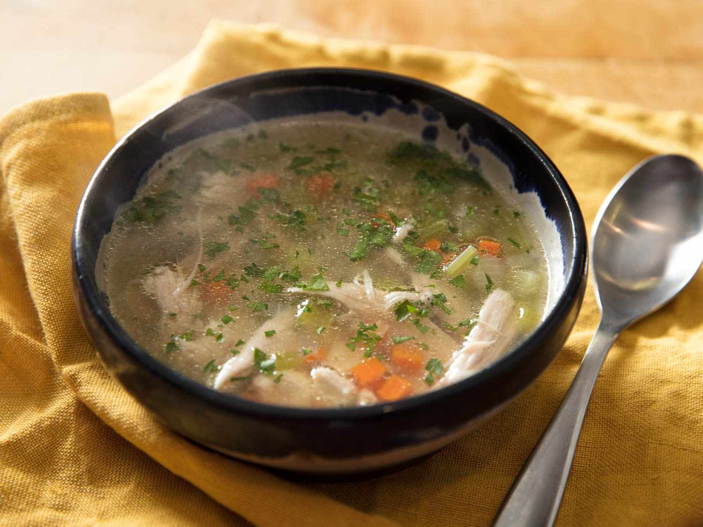

HOME
Soup

DESCRIPTION
A chicken noodle soup recipe that's a very easy, very good substitute
for when you don't have time to make your soup totally from scratch.
Let's learn how to prepare it!
INGREDIENTS
-
1 tablespoon butter
-
½ cup chopped onion
-
½ cup chopped celery
-
4 (14.5 ounce) cans chicken broth
-
1 (14.5 ounce) can vegetable broth
-
½ pound chopped cooked chicken breast
-
1 ½ cups egg noodles
-
1 cup sliced carrots
-
½ teaspoon dried basil
-
½ teaspoon dried oregano
-
salt and ground black pepper to taste
STEPS
-
Melt butter in a large pot over medium heat. Add onion and celery and cook until just tender, about 5 minutes.
-
Add chicken broth, vegetable broth, chicken, egg noodles, carrots, basil, oregano, salt, and pepper. Stir to combine and bring to a boil.
-
Reduce heat and simmer for 20 minutes.